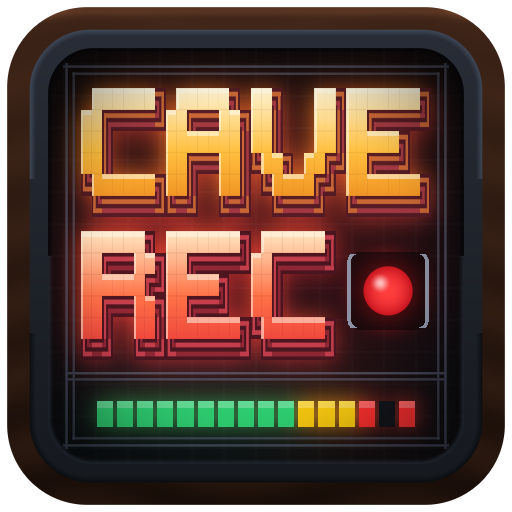
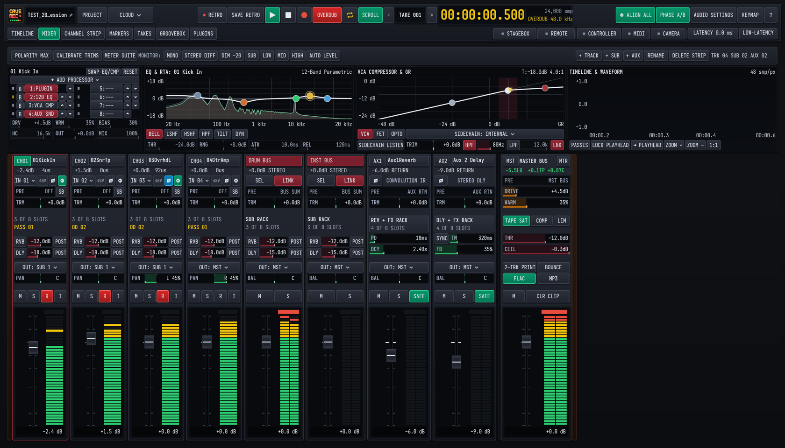

macOS Apple Silicon arm64
Detected for your systemmacOS 13+ (M1/M2/M3/M4) • CoreAudio • Includes Cave Recorder.app, caverec-cli, Studio Skills & PDF Manual

╔═══════════════════════════════════════════════════════════════════════════╗ ║ ██████╗ █████╗ ██╗ ██╗███████╗██████╗ ███████╗ ██████╗ ║ ║ ██╔════╝██╔══██╗██║ ██║██╔════╝██╔══██╗██╔════╝██╔════╝ [● REC] ║ ║ ██║ ███████║██║ ██║█████╗ ██████╔╝█████╗ ██║ 30m RAM RING ║ ║ ██║ ██╔══██║╚██╗ ██╔╝██╔══╝ ██╔══██╗██╔══╝ ██║ 48kHz ADAT ║ ║ ╚██████╗██║ ██║ ╚████╔╝ ███████╗██║ ██║███████╗╚██████╗ 32-BIT FLOAT ║ ║ ╚═════╝╚═╝ ╚═╝ ╚═══╝ ╚══════╝╚═╝ ╚═╝╚══════╝ ╚═════╝ ║ ╠═══════════════════════════════════════════════════════════════════════════╣ ║ CH 01-32 [████████████████████░░░░░] -3.2 dBFS │ PHASE: Δ 0.02 ms Ø ║ ╚═══════════════════════════════════════════════════════════════════════════╝
caverec)
A multitrack recorder and mixing console for bands, self-recording musicians, and studio engineers playing together in one room. One evening Session holds your mic patching and console mix while every song or jam saves as its own 00:00:00.000 Take with isolated 32-bit float WAV stems, a live stereo Print, and synchronized 50 fps multi-camera video. Includes a full Stagebox Mixer for X-Air and X32 hardware, multi-mic phase alignment, a built-in channel-strip and amp suite with .nam support, a 6-engine Groovebox (drums, monophonic bass, and Studio Sampler), dual-screen hardware pad controller support, scriptable caverec-cli automation, contextual Studio Coach guidance, wireless Cave Companion room control on iOS and Android, and open DAW and video exports.
30-Minute Rolling Memory Buffer: While stopped, Cave Recorder continuously buffers armed inputs in RAM, ready to save the jam that starts five minutes before anyone remembers to press Record.
macOS 13+ (M1/M2/M3/M4) • CoreAudio • Includes Cave Recorder.app, caverec-cli, Studio Skills & PDF Manual
Windows 10/11 (64-bit) • WASAPI Exclusive/Shared • Includes caverec.exe, caverec-cli & PDF Manual
Linux x86_64 (glibc 2.27+) • ALSA Direct Hardware • Includes caverec, caverec-cli & PDF Manual
Android 10+ (API 29+) • Bonjour Wi-Fi Pairing, 32-Ch Mixer, My Monitor Stagebox, Groovebox & Sampler & 50 fps Camera
Most studio software assumes one project file equals one pre-planned song built on a beat grid, recorded one overdub at a time with someone sitting at the computer. Recording a band live in a rehearsal room or project studio looks very different: microphones bleed into one another, tempo breathes with the room, loud amplifiers interact, and the person engineering the session is usually holding a guitar or sitting behind the drums.
Cave Recorder handles the repetitive desk work quietly in the background (rolling 30-minute memory capture, input trim calibration, multi-microphone polarity and sub-sample phase alignment, bleed-safe dynamics, and instant rough-mix Prints) so you can spend the evening on mic placement and playing rather than file management.
Cave Recorder omits timeline piano rolls, MIDI clip grids, tempo-warping, and automatic pitch correction. Time runs in physical seconds, milliseconds, and samples (00:00:00.000) inside independent Takes so live tempo push-and-pull stays intact.
When everyone in the room is playing an instrument, nobody is free to ride vocal faders or check 16 preamps. Rolling 30-minute RAM capture, -18 dBFS CALIBRATE ALL TRIMS, Polarity & Allpass Phase Alignment, and bleed-frozen Vocal Rider leveling keep the signal path clean without getting in the way.
Every strip and bus includes 12-band dynamic EQ, VCA/FET/Opto compression, amp modeling with .nam capture, and LUFS metering with musical starting points and full parameter access. Sessions run offline without subscriptions or license checks, open cleanly years later, host external Audio Unit or CLAP plugins when wanted, and store plain 32-bit float WAV stems on disk.

Scale from a 2-channel acoustic duo up to 32 mono or stereo-linked tracks, 16 stereo Subgroup Buses, and 8 stereo Aux Returns, plus a full Stagebox mixer for X-Air and X32 hardware. Load the 6-engine Groovebox (drums, Analog Bass, and Studio Sampler) or external .clap and Audio Unit instruments straight to 32-bit float Pass stems, with Studio Coach contextual help and plain-English controls across all four surfaces.
A continuous 30-minute rolling memory buffer captures armed hardware inputs, virtual instruments, and Groovebox jams while stopped so you can save a performance after it happens. Every Take records 32-bit float multitrack stems, a live stereo Print, and synchronized 50 fps or 25 fps multi-camera video with flash calibration and 2-, 3-, or 4-camera split-screen mixdowns.
ALIGN Φ)
Timing differences between close drum mics, overheads, room mics, and DI/cab pairs hollow out low-end punch. Clicking ALIGN ALL correlates arrival times against your reference mic, applying polarity inversion (Ø) and microsecond sub-sample alignment in one step.
Pair multiple iOS and Android Cave Companion phones or tablets automatically over Bonjour Wi-Fi (or explore immediately with the built-in Sample Studio Session) for wireless 32-channel mixing, Stagebox My Monitor, Groovebox and Sampler control, 1080p50 camera recording, and multi-angle playback. Every Take starts at 00:00:00.000 with inline rename, expandable Pass lanes, Snapshot A/B recall, open .dawproject and .fcpxml exports, and optional Google Drive sync.
Multi-mic arrival delays and ported cabinet phase dispersion steal 6 to 12 dB of low-end punch on drum kits and bass DI + mic'd cabinet pairs. Every channel strip includes a built-in 5-stage allpass Phase Alignment Network (10 ms click-free crossfade) alongside sub-sample delay (Φ) and polarity (Ø):
Ø) combination across related multi-mic channel groups to maximize constructive punch across Low-End Weight (30–200 Hz Punch), Broadband Loudness (ITU-R BS.1770-4 K-Weighted LUFS), Transient Crest & Impact (60 Hz–6 kHz), and Anti-Comb Spectral Smoothness criteria with automatic live phase-audition backup.20 Hz–20 kHz spectrum using all CPU cores to solve optimal sub-sample arrival delays and 5-stage allpass phase rotation filters (with live Coherence Efficiency % metering), populating four loudness-matched profiles (Candidates A, B, C, D: Pure Ø Zero Dispersion, Tight Low-End Lock, Deep Multi-Band Allpass, and Full Wavefront + Allpass) with gain-matched audition.Track direct guitar or bass, load custom speaker impulse responses, or clone your own tube heads and fuzz pedals in the room with full-height interactive processor views:
.nam Neural Capture) + Cabinet IR Loader: Switch between 2x/4x oversampled physical tube preamp/power-amp circuits and .nam Neural Amp Modeler captures (with a guided 3-step hardware capture wizard offering Turbo, Standard, and Mastering presets and best-fit early stop), paired with an integrated or standalone Speaker Cabinet & IR Loader featuring 8 modeled guitar/bass cabinets, zero-latency .wav and linear .nam IR convolution, a self-contained IR library, and dual Drive × Presence and Mic Position × Air XY pads.-34 dBFS fingerpicking and 1.5–5.0 s harmonic feedback swells open while clamping palm-mute hum in 18–22 ms, alongside differential Drum Bleed tom isolation with fundamental lock and dedicated full-height inspector views across all 15 built-in processors.
When a band captures a strong live groove in Take 001, you should not have to scrap it because one snare hit clipped the preamp, an old amp buzzed at 60 Hz, or someone missed a chord in bar 42:
1–256 smp) smoothly from the surrounding harmonic waveform, while a 12-harmonic Q = 20–100 (default 60) comb notch array strips 45–65 Hz mains buzz without dulling guitar tone.±50 ms phase-locked crossfades, or remove a mic stand bump (5–150 ms) via spectral and harmonic spot-healing.Every channel and Subgroup Bus provides a complete vocal, drum, and instrument sculpting chain with zero internal latency:
B1–B12) activates threshold-driven dynamic attenuation or boost to clamp 165 Hz palm-mute cabinet boom or 3.2 kHz vocal harshness only when it pokes out.VCA / FET / Opto) & Differential Transient Shaper: Switch between feed-forward RMS bus glue (VCA), 0.02 ms discrete transistor snap (FET), and program-dependent optical leveling (Opto), plus level-independent attack/sustain transient shaping.±6 dB vocal leveler that freezes during pauses so drum bleed is never boosted, paired with a 120 Hz dynamic low-shelf Plosive Arrestor, split-band sibilance compressor, and Haas-free stereo pitch doubler.Analog-modeled space, echo, and resonant filter movement built directly into the console and locked to live studio tempo without hunting for external stompbox plugins:
Aux 2 Delay (Capstan Tape, BBD Analog, Pristine Digital): Lock echoes to 18 musical note subdivisions (1/64 to 4BAR, straight, dotted, and triplet) with capstan/analog pitch glide on live tempo shifts, independent Right-channel subdivision in Digital mode for polyrhythmic stereo echoes, 600 ms BBD horizon readout, and built-in Dynamic Ducking.12 dB/oct (2P) and 24 dB/oct (4P) transistor ladder (20 Hz–16 kHz) with Class-A drive, sub-bass resonance compensation, bi-directional envelope follower, and zero-latency EMT 140 convolution + algorithmic studio plate reverb.AUTO-LVL & Broadcast Metering
Verify mix translation across any speaker system and hit exact streaming/mastering targets while keeping your live Master Bus 2-TRK Print untouched:
CALIBRATE ALL TRIMS & Elliptical Bass-Mono: Normalizes all active channels to -18 dBFS RMS (-6 dBFS ceiling) in one click and folds stereo sub-bass (20–500 Hz) to phase-solid center mono.AUTO-LVL: Wired strictly downstream of 2-TRK Print and BOUNCE. Solo 4th-order Linkwitz-Riley bands (SUB <90 Hz, LOW 90–350 Hz, MID 350 Hz–3.5 kHz, HIGH >3.5 kHz), check MONO (M⊕), DIFF (L−R), or DIM (-20 dB), and A/B any plugin or rack with loudness-matched AUTO-LVL bypass.LUFS (M, S, I, LRA), 4x oversampled True-Peak (dBTP), PSR/PLR crest-factor ballistics guide, Lissajous + 32-band Spectral Phase Scope, and 31-band 1/3-octave RTA (-4.5 dB/oct Studio tilt).Build analog percussion grooves, sequence chromatic monophonic basslines, or count off rehearsals directly inside your console across six voice engines (five synth models plus the Studio Sampler), a Triggered Storage-CRT oscilloscope, and wireless phone and tablet control:
24 dB/oct sizzle HPF (Metallic Matrix), Modal & Impact percussion, and the Analog Bass synthesizer (sawtooth-to-pulse VCO, -1 oct flip-flop sub, resonant 4-pole ladder and passband-compensated OTA filter, portamento glide, accent punch, harmonic drive, and chromatic MIDI keyboard play).4x oversampled soft clipper.0.1% Swing, per-step parameter locks, and a 4-scene morph crossfader. Route individual voices onto console strips for pre-tape Pass stems and control pads, steps, and synth parameters from Cave Companion over Wi-Fi.
Keep hardware floor loopers, external drum machines, hardware synthesizers, and live-played virtual instruments locked tightly to your linear Take recordings without forcing a timeline beat grid:
24 PPQN MIDI Clock and Transport (Start / Continue / Stop) with 5-pin DIN wire protection, automatic pre-roll so Beat 1 lands on sample 0, MIDI footswitch learn mapping, and 1-click microsecond hardware synth/looper delay compensation.AU) Virtual Instruments: Route any channel strip to host an external virtual instrument with MIDI port/channel filtering, automatic 0%-CPU idle sleep after note tails fade, stereo 30-minute rolling RAM capture, and automatic Pass playback isolation.
Slice spontaneous rehearsal grooves, single drum hits, or live console channels into playable kits and mangled loops without cluttering your linear Take timelines, synchronized across Desktop, Cave Companion, and hardware controllers:
Sensitivity and zero-crossing snap, divide evenly by Grid, or tap slice markers live on pads. Apply up to 64 slices in one undoable action across 16 choke-grouped pads (with optional micro-nudged pattern placement) or into a single Slice-Lock sequencer lane with linear or randomized slice locks.Take range straight from the Timeline (dry Pass stem or post-FX bounce) or resample live from any Track, Subgroup, Aux Return, Master Bus, or input via threshold pre-roll (10 ms), bar-synced loops, or manual trigger. Offline crop, fade, normalize, reverse, transient-preserving BPM time-stretch/pitch-shift, and FX bounce keep active WAVs clean while retaining prior generations in reversible Sample History.One-Shot, Gate Hold, Loop Forward, Ping-Pong, and Slice-Lock), equal-power loop crossfades down to micro-grain lengths, per-step reverse locks, bipolar DJ Filter or tuned Comb Resonator, preamp drive and bit/rate grit, and a tempo-synced assignable LFO.
Run complete zero-latency hardware monitor mixes, PA/wedge EQ, vocal tracking reverb, and live routing for X-Air (including revision-suffixed XR18V2 / V2 models) and X32 stageboxes right inside Cave Recorder without external mixer apps:
600 ms hold-to-toggle +48V interlock.USB Sends (1-18), Channel Inputs & Virtual Soundcheck, Analog Outputs (with one-click USB → Aux → Main L/R return routing and Master Bus hardware output faders), and Ultranet P16 while verifying raw USB recording taps and syncing per-session Stagebox Scenes.My Monitor with More Me and bus master) from iOS or Android while the engineer runs full stagebox DSP with optional single-device Mixer Lock.Play beats, slice samples, and mix your console directly from dual-screen 16-pad USB hardware controllers via a standalone companion surface daemon with automatic local discovery and clean unplug recovery:
DRUM STUDIO & CONSOLE DAW REMOTE): Switch between sub-4 ms velocity and pressure pads (Note Repeat, melodic arpeggiator, Beat-Repeat pads, bottom-to-top step sequencing, pattern overdub, and 4-tab SAMPLING) and an 8-channel banked console mixer with strict Cyan vs. Crimson recording separation.[M] [S] [R] Controls: Each 480x272 screen aligns 4 visual strips directly above its 4 physical touch encoders across Tracks 1–32, Subgroups, Aux Sends (E1–E8), Stagebox preamps with 600 ms +48V hold interlock, and Solo Gold [M] [S] [R] strip states.Processor curves and hosted CLAP / AU Plugin banks from capacitive touch encoders, trigger 16-pad Ranges, Cue Markers, and PassLane comping, scrub at 60 Hz with the Jog wheel, or capture the 30-minute rolling RAM buffer in one press.Script repeatable studio sessions, inspect audio signals quantitatively, and work faster across Desktop, Phone, Tablet, and Hardware surfaces with consistent plain studio terminology:
caverec-cli, caverec-headless & Python Client: Control live Cave Recorder sessions or render offline faster than real time across strips, racks, phase alignment, audio repair, Groovebox, Sampler, Stagebox, and exports, backed by 4-point sample-clocked signal probes (LUFS, crest, spectral, and dual-probe phase metrics), a zero-dependency Python client, and 6 installable Studio Engineering Skills.[?]): Replaces cryptic abbreviations across all four surfaces with clear studio labels (Timeline, Mixer, Channel Strip, Markers, Takes, Groovebox, Plugins, Stagebox, Remote), backed by a toggleable Studio Coach guidance bar (?) and 450 ms hover tooltips.Bug reports, feature requests, and notes from your rehearsal room are always welcome, completely unattached to any donation. Share what interfaces you patch in or where a rough edge tripped you up.
If Cave Recorder earns its keep in your sessions and you'd like to chip in toward development (or rehearsal-cave coffee), optional one-time or recurring support is available via GitHub Sponsors.